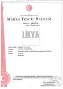

1962 Yılında kurulan Öziş Mobilya faliyetine ahşap doğrama ve kapı imalatıyla başlamış ve ağırlıklı olarak sürekli Ahşap kullanmıştır. 1985 yılında faaliyetleri arasına mutfak, banyo, portmanto ve özel tarz yatak odası mobilyaları üretimine başlamıştır. Ayrıca bahçe kamelyaları, ahşap tavan lambirileri ve ahşap dekorasyon ağırlıklı çalışmalar yapmaktadır. 1995 yılında üretmiş olduğu mutfak , banyo ve kapı gibi özel ürünleri Likya markası adı altında sizlere sunmaktadır. Faaliyetlerimizin devam ettiği alanlar: Ahşap doğramalar, Ahşap Kapılar, Ahşap Lambirileri, Ahşap Dekorasyon, Ahşap Verandalar, Ahşap Kamelyalar,, Mutfak Dolapları, Banyo Dolapları, Kapılar, Yatak Odaları, Portmantolar, Gömme Dolaplar
